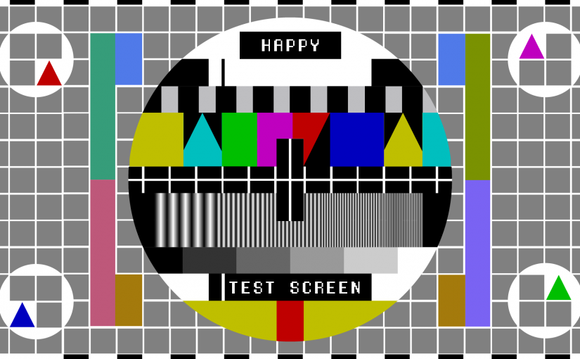

Images can improve the design and apperance of a web page. Images are not technically inserted into a web page; images are linked to web pages. The img tag creates a holding space for the referenced image.

A image can also be used as a link.
Images can also float on the webpage.
The image will float to the right of the text.
Image Maps
With html we can create image maps and therefore create clickable areas on the images. The HTML map tag defines an image map. An image map is an image with clickable areas. The areas are defined with one or more area tags. The idea behind an image map is that you should be able to perform different actions depending on where in the image you click. The usemap value starts with a hash tag # followed by the name of the image map, and is used to create a relationship between the image and the image map.
Areas
There are diffrent shapes that can be used to click on a certain region.
rect, circle, poly.
Image Map and JavaScript
A clickable are can also trigger a javascript function.
Background Images
To add a background image on an HTML element, use the HTML style attribute and the CSS background-image property.
test
If you want the entire page to have a background image, you must specify the background image on the body element. If the background image is smaller than the element, the image will repeat itself, horizontally and vertically, until it reaches the end of the element. To avoid the background image from repeating itself, set the background-repeat property to no-repeat.
The picture element
The HTML picture element gives web developers more flexibility in specifying image resources. The picture element contains one or more source elements, each referring to different images through the srcset attribute. This way the browser can choose the image that best fits the current view and/or device. Each source element has a media attribute that defines when the image is the most suitable.